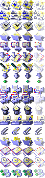
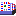
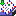
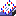

Thunderbird テーマの探求
現在、Thunderbird は mozilla classic theme を使用しています。不幸なことに、classic のメールアイコンは Netscape 4.0 時代のものです。それらは極端に古く、早急に新しくすることが必要です。これは現在のテーマのスクリーンショットです。私たちは、Firebird browser テーマで標準として使われている UI にマッチした Thunderbird 用の新しいテーマを製作したいと思っています。しかし、メールソフト用の UI を開発することは、ブラウザ用のそれを開発することよりも大変な作業です。特に、メールソフトのアイコンの数は、ブラウザのそれよりもはるかに多いのです。まず初めに、それぞれ独自のツールバーを持っている、三つのアプリケーションウインドウがあります。それらはメール、メール作成、アドレス帳です。それに加えて、フォルダ表示部やスレッド表示部に使われる、全てのこまごましたアイコンも必要です。メールアイコン作成の途中でこの事に気づいても、無駄になった人生は取り戻せません。
{kind=link}
私たちは、Thunderbird のデフォルトテーマを作ってくれる貢献者を心から欲しています(まず手始めに、デフォルトのアイコンを作ることによって)。私たちはやる気に満ちているのですが、これを実行するほどの芸術的才能を持ち合わせていません。しかしながら、おそらく私たちは、その作業を苦しくないものにして、あなたが Thunderbird のデフォルトテーマ用のアイコンを作ってくれるようにはできると思います。この文書は、テーマを作るのに必要な作業をあなたに一通りめぐってもらう目的で書かれています。最初の焦点はアイコンであって、UI のデザイン全体ではありません。アイコンにおける難局をのりきったら、焦点が変更されるだろうと思います。実際のところ、私たちがアイコンさえ手に入れたら、それらを全てテーマに採用するつもりです。
短期的な目標：一人で全ての Thunderbird 用アイコンをデザインすることは、荷が重過ぎるでしょう。数が多すぎます。もし私たちが、誰か UI 経験の豊富な方に、メールやアドレス帳、メール作成のような非常に重要かつよく見られる部分のアイコンをデザインしてもらえれば素晴らしいと思います。それはアイコンのために見かけやテーマを確立するのに役立つでしょう。そうすれば、私たちは他のデザイナーに、たくさんの小さいアイコンの作成を委任し始めることができます。そのようにすれば、作業も分配されますし、私たちも素晴らしい Thunderbird 用のテーマを作る手助けもできます。
更新：Arvid Axelsson、Firebird 用 Qute テーマ のデザイナーが、Firebird 用のそれにマッチした Thunderbird 用のテーマを作ることに同意しました！彼が作成するものを見るのを待ちきれません。
以下のトピックは Thunderbird 用のデフォルトテーマを作る際の優先度順に並べられています。さらに、私たちは全てのアイコンをここに掲げているわけではなく、まず初めに片付けたいものだけを並べてあります。
メールの三画面表示部
これらは、私たちの製品でもっとも見られるウインドウです。最初のステップは、三画面表示部のツールバーボタンのアイコンを全て仕上げることです。それぞれのツールバーボタンは四つの画像状態値を持ち得ます：normal, hover, hover active(ボタンが押されている状態), それと disabled です。それぞれのボタンが、四つの画像のバリエーションを持ちます(それぞれの状態に一つずつ)。パフォーマンスに関する理由から、私たちは小さな画像ファイルを全てロードする代わりに、これら全てのアイコンを一つの大きな画像ファイルに配置します。以下は現在の classic テーマ用の画像ファイルです。しかし、 modern toolbar も見たほうが良いでしょう。三画面表示部のアイコンがどういう見た目になるべきか、さらなるアイデアを得られるかもしれません。
{kind=link}
|
 |
| ジャンク (メッセージにジャンクとして印をつける) *これは新しく、私たちのテンプレート例には含まれていません* | |
| Thunderbird Throbber (動画) |
{kind=link}
{kind=link}
{kind=link}
メール作成ウインドウ
メール作成ウインドウは三画面表示部ほどたくさんのツールバーボタンを持っていません。アイコンはすでに上の画像の中にリストされています (それらは同じ大きな画像の一部です)。
- 送信
- アドレス (アドレス選択画面を表示します)
- 添付 (添付ファイルを追加します。普通はペーパークリップのようなもので表されます)
- セキュリティ (メッセージに署名する、暗号化するなどのセキュリティに関する情報のドロップダウンリスト)
- 保存 (メッセージの下書きを保存)
- スペリング?? (いつか私たちはスペルチェッカーを搭載します)
フォルダ表示部のアイコン
たくさんの小さなアイコンがフォルダ表示部にあります。これらのアイコンのサイズは重要なので、新しいものをデザインする前に、オリジナルバージョンの大きさを調べることを忘れないでください。次の表は最初に注力すべき、より重要なものを示しています。注：私たちは必ずしもこれらのアイコンが新しいテーマと共に変更されるべきといっているわけではありません。これはアーティスト次第です。もしかしたら、私たちは classic よりも少しだけ粋な modern テーマを掘り下げて、ペイントショップで、Thunderbird のテーマに合うように改良するかもしれません。
| 受信箱フォルダ |  |
| 新着メールのある受信箱フォルダ |  |
| 開いている受信箱フォルダ |  |
| ジャンクフォルダ | |
| ゴミ箱フォルダ | |
| 新着メールのあるフォルダ | |
| 新着メールがあって、開いているフォルダ | |
| 開いているフォルダ | |
| オンラインメールサーバ(すなわち IMAP) | |
| 新着メールのあるオンラインメールサーバ (すなわち IMAP) | |
| ローカルメールサーバ (すなわち POP) | |
| 新着メールのあるローカルメールサーバ (すなわち POP) | |
| ニューズサーバ | |
| 下書きフォルダ | |
| 送信済みフォルダ | |
| 未送信メッセージフォルダ |
{kind=link}
{kind=link}
{kind=link}
{kind=link}
{kind=link}
{kind=link}
{kind=link}
{kind=link}
{kind=link}
{kind=link}
{kind=link}
{kind=link}
{kind=link}
{kind=link}
{kind=link}
{kind=link}
スレッド表示部のアイコン
たくさんの小さなアイコンがフォルダ表示部にあります。これらのアイコンのサイズは重要なので、新しいものをデザインする前に、オリジナルバージョンの大きさを調べることを忘れないでください。次の表は最初に注力すべき、より重要なものを示しています。
| メール メッセージ | |
| 添付ファイル付きメール メッセージ | |
| 新着メール メッセージ | |
| ジャンクメッセージ | |
| スレッド欄 (スレッド表示部の列アイコンの一つです。) |
{kind=link}
{kind=link}
{kind=link}
{kind=link}
{kind=link}
その他のよく見られるアイコン
この項では、ツールバーの一部でも、スレッド/フォルダ表示部の一部でもないが、よく見られると思われる全てのカテゴリのアイコンを取り上げます。
{kind=link}
{kind=link}
アドレス帳
ツールバーウインドウでいちばん重要度が低いのはアドレス帳です。だから一番最後に注力します。
| 新規カード | |
| 新規リスト | |
| 新規作成 (メールをアドレスに送信します) | |
| カードのプロパティ | |
| 削除 | |
| インスタントメッセージ (インスタントメッセージを送信します) |
{kind=link}